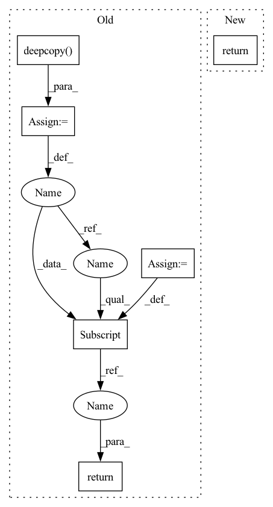

Pattern ID :3468
Before Change
def linear_interpolate(data, interval):
output = copy.deepcopy( data)
num_frames, num_markers, num_axis = data.shape
all_frames = list(range(num_frames))
exist_frames = list(range(0, num_frames, interval))
for marker in range(num_markers):
for axis in range(num_axis):
exist_x = exist_frames
exist_y = data[exist_frames, marker, axis]
interp_y = interpolate.interp1d(exist_x, exist_y)
output[:, marker, axis] = np.array(interp_y(all_frames))
return output
def quadratic_interpolate(data, interval):
output = copy.deepcopy(data)After Change
def linear_interpolate(data, interval):
return interpolate(data, interval, "linear")
def quadratic_interpolate(data, interval):In pattern: SUPERPATTERN
Frequency: 3
Non-data size: 6
Instances Fragment ID: 13383784
Project Name: yknishidate/morecon
Commit Name: 5404bf51fefd2ca1a1d8c205e569a5769fdcebd9
Time: 2022-01-29
Author: yuki18425@gmail.com
File Name: interpolation.py
M Class Name: AnonimousClass
N Class Name: AnonimousClass
M Method Name: linear_interpolate(2)
N Method Name: linear_interpolate(2)
M Parent Class:
N Parent Class:
M File Name: interpolation.py
N File Name: interpolation.py
M Start Line: 7
M End Line: 17
N Start Line: 21
N End Line: 21
Before Change
def linear_interpolate(data, interval):
output = copy.deepcopy( data)
num_frames, num_markers, num_axis = data.shape
all_frames = list(range(num_frames))
exist_frames = list(range(0, num_frames, interval))
for marker in range(num_markers):
for axis in range(num_axis):
exist_x = exist_frames
exist_y = data[exist_frames, marker, axis]
interp_y = interpolate.interp1d(exist_x, exist_y)
output[:, marker, axis] = np.array(interp_y(all_frames))
return output
def quadratic_interpolate(data, interval):After Change
def linear_interpolate(data, interval):
return interpolate(data, interval, "linear")
def quadratic_interpolate(data, interval): Fragment ID: 13383785
Project Name: yknishidate/morecon
Commit Name: 5404bf51fefd2ca1a1d8c205e569a5769fdcebd9
Time: 2022-01-29
Author: yuki18425@gmail.com
File Name: interpolation.py
M Class Name: AnonimousClass
N Class Name: AnonimousClass
M Method Name: linear_interpolate(2)
N Method Name: linear_interpolate(2)
M Parent Class:
N Parent Class:
M File Name: interpolation.py
N File Name: interpolation.py
M Start Line: 7
M End Line: 17
N Start Line: 21
N End Line: 21
Before Change
def adapt_dataset_from(training_dataset: DictConfig, setting: str):
if setting == "validation":
validation_dataset = copy.deepcopy( training_dataset)
validation_dataset["materialize"] = True
return validation_dataset
elif setting == "prediction":
prediction_dataset = copy.deepcopy(training_dataset)
prediction_dataset["_target_"] = re.sub(After Change
].isupper(): // if it is not upper then it is a class method
train_dataset_class = ".".join(train_dataset_class.split(".")[:-1])
OmegaConf.resolve(training_dataset)
return hydra.utils.instantiate(
{"_target_": f"{train_dataset_class}.adapt_dataset_from"},
training_dataset=training_dataset,
setting=setting, Fragment ID: 13383786
Project Name: sunglasses-ai/classy
Commit Name: 35ad6262cae17da108092f0cf5f42706ceac3ccc
Time: 2022-04-04
Author: luigi.p.procopio@gmail.com
File Name: classy/utils/omegaconf.py
M Class Name: AnonimousClass
N Class Name: AnonimousClass
M Method Name: adapt_dataset_from(2)
N Method Name: adapt_dataset_from(2)
M Parent Class:
N Parent Class:
M File Name: classy/utils/omegaconf.py
N File Name: classy/utils/omegaconf.py
M Start Line: 8
M End Line: 26
N Start Line: 9
N End Line: 20
Before Change
def quadratic_interpolate(data, interval):
output = copy.deepcopy( data)
num_frames, num_markers, num_axis = data.shape
all_frames = list(range(num_frames))
exist_frames = list(range(0, num_frames, interval))
for marker in range(num_markers):
for axis in range(num_axis):
exist_x = exist_frames
exist_y = data[exist_frames, marker, axis]
interp_y = interpolate.interp1d(exist_x, exist_y, kind="quadratic")
output[:, marker, axis] = np.array(interp_y(all_frames))
return output
After Change
def quadratic_interpolate(data, interval):
return interpolate(data, interval, "quadratic")
Fragment ID: 13383782
Project Name: yknishidate/morecon
Commit Name: 5404bf51fefd2ca1a1d8c205e569a5769fdcebd9
Time: 2022-01-29
Author: yuki18425@gmail.com
File Name: interpolation.py
M Class Name: AnonimousClass
N Class Name: AnonimousClass
M Method Name: quadratic_interpolate(2)
N Method Name: quadratic_interpolate(2)
M Parent Class:
N Parent Class:
M File Name: interpolation.py
N File Name: interpolation.py
M Start Line: 21
M End Line: 31
N Start Line: 25
N End Line: 25